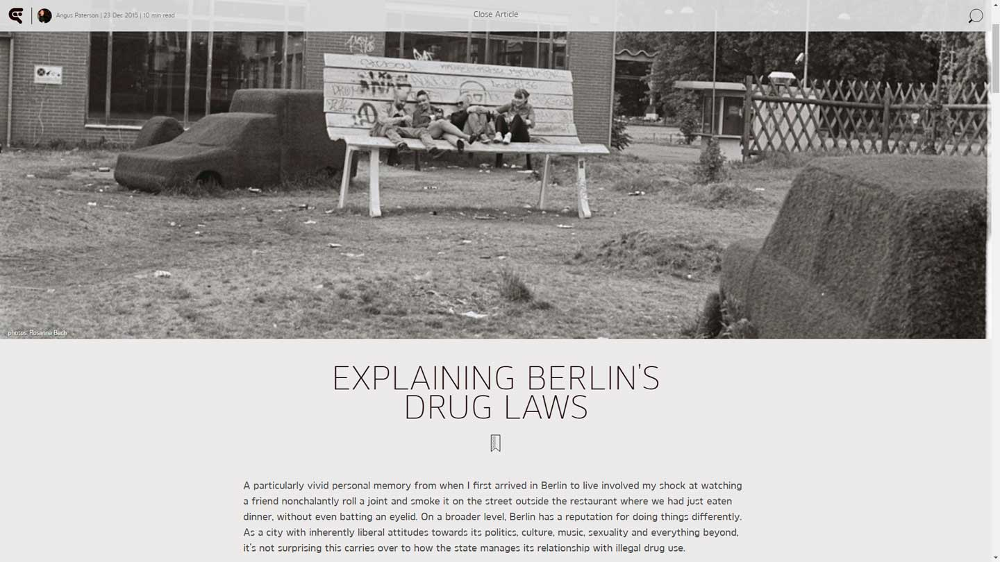
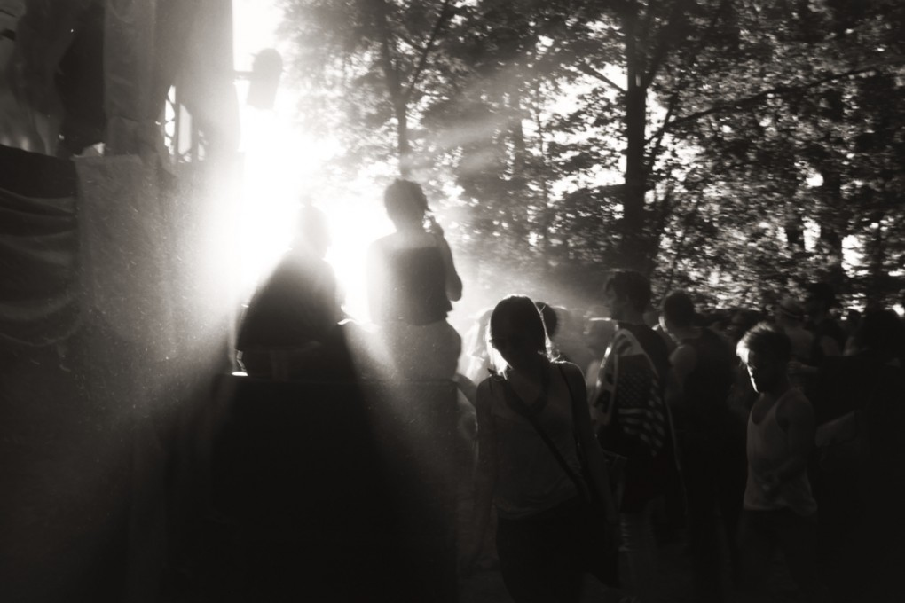

Explaining Berlin's Drug Laws
{kind=link}

A particularly vivid personal memory from when I first arrived in Berlin to live involved my shock at watching a friend nonchalantly roll a joint and smoke it on the street outside the restaurant where we had just eaten dinner, without even batting an eyelid. On a broader level, Berlin has a reputation for doing things differently. As a city with inherently liberal attitudes towards its politics, culture, music, sexuality and everything beyond, it’s not surprising this carries over to how the state manages its relationship with illegal drug use.
A common refrain you’ll hear from locals is that, “Berlin is not Germany;” as if they believe their capital exists in a different universe to the rest of Deutschland. However, Germany has far more in common with its famous capital than a statement like this would suggest. Germany might in many senses be a conservative country where drugs remain illegal, though paradoxically, its drug laws situates it amongst some of the most progressive countries in Europe.
In 1994, just a few short years after reunification, it was ruled in the Bundesverfassungsgericht (the Federal Constitutional Court), that drug addiction was no longer considered a crime. Prosecution would also no longer be pursued for those possessing small amounts for personal use. Germany’s narcotic laws were changed in 2000 to allow for supervised injection rooms, and in 2002 a study began that would evaluate heroin-assisted treatment in place of methadone. The study’s success saw heroin-assisted treatment integrated into mandatory health insurance in 2009.
"...we try to provide scientific information. That’s more successful than a simple policy of ‘say no to drugs'...”
While drugs are certainly still illegal, the manner in which they are managed by the establishment is situated a distant universe away from the ‘War on Drugs’ ideology. “Above all, the topic is something that needs to be discussed without emotion,” narcotics commissioner Christine Köhler-Azara told the Morgenpost newspaper in July, a figure who speaks regularly and openly abut Germany’s drug policies. “We want to be pragmatic. Our experience has shown that it’s not a good strategy to create too much hysteria; it’s important for the state to not lose credibility. Instead, we try to provide scientific information. That’s more successful than a simple policy of ‘say no to drugs.'”
Berlin certainly enjoys a more relaxed and liberal approach to drugs, though rather than the city being an anomaly, it is like a liberalized flower to blossom from the foundational roots of the German state and legal system. There’s a consummately German strain of common sense present in the discourse that allows for a measured discussion on the realities of drug use, as well as a growing push for further decriminalization, and even complete legalization.
Cannabis Possession in Berlin
Drug laws are decided at a federal level in Germany, spelled out in the Betäubungsmittelgesetz (narcotics act). Significantly, while unauthorised possession of drugs is considered a criminal offence, the use of drugs itself isn’t mentioned as an offence. There are also alternatives to prosecution within the law if only a small amount of possession is involved.
The practice of federalism within Germany means the country’s 16 different states, or ‘Länder’, are allowed far-reaching autonomy in determining how they govern, with legislative authority resting with the states, unless otherwise specified in the Basic Law. The specific area where each Länder is allowed autonomy within these federal drug laws is determining the amount that an individual can be caught with before prosecution is pursued.
Currently within the Länder of Berlin you can be caught carrying up to 15 grams of cannabis without being prosecuted. Hop across to the bordering state of Brandenburg, and the limit is six grams, which is the same for many other states including the southern Länder of Bavaria and its capital city of Munich; considered to be Germany’s more conservatively inclined. In terms of methamphetamines, a federal ruling limits the ‘non-small’ amount to 5 grams of a substance.
"...just don’t go making a big deal out of it and you’ll be fine..."
While certain levels of discretion are practiced with drug use, it’s hardly considered a cultural taboo, and punters are largely left by the state to live their lives as they see fit. It’s so nonchalant that it leaves many international visitors with the impression that drug use has been legalised. Web High spells this out with some eloquence:
“Avoid smoking in public and you have nothing to worry about. If you do decide to do so anyway, you still have almost nothing to worry about. Just don’t go making a big deal out of it and you’ll be fine, in other words don’t go waving a joint in front of a police officer and most chances are you will stay out of trouble smoking as much weed as you want.” As part of a casual discussion of drug culture in Berlin, it’s effectively true.
{kind=link}

Berlin’s drug commissioner speaks out
When Berlin’s drug commissioner Christine Köhler-Azara spoke to Morgenpost this year, she acknowledged the political debate on the legalization of cannabis was gaining momentum. “The debate in society can not be stopped, and this certainly has its advantages. However, it will take quite a while to find clarity on the complexity of the issue.” She suggests that a shift in how cannabis use is regulated is far more likely than the ban being lifted altogether, with the primary concern being the protection of minors who face higher mental health risks from smoking the drug.
"...Even if charges for drug possession in small amounts are dropped, there are still criminal charges..."
Speaking on Germany’s liberal drug policy to local ex-pat publication, Exberliner, she references the Na Klar informational campaign and educational pamphlets; including measured advice to readers such as taking half an ecstasy pill, and then waiting half an hour before taking the second. "It’s a different line than in the US,” Köhler-Azara concedes. However, when discussing the misconception that drugs, and particularly cannabis, are decriminalized in Berlin, she is very clear in her language. “That is a mistake. Cannabis is still illegal in Germany. We’ve signed a treaty against drugs with the World Health Organisation. Even if charges for drug possession in small amounts are dropped, there are still criminal charges. That means people still get their fingerprints and their pictures taken. Drugs are illegal. And the narcotics laws do also apply in Berlin!”
Quirks in the drug discussion
The debate continues, and Berlin is fresh from a flashpoint that stirred further discussion. In October the mayor of Berlin’s Kreuzberg-Friedrichshain district, Monika Herman of the Green Party, announced the Federal Institute of Pharmaceuticals (BfArM) had rejected the submission made in June for a pilot project that would introduce legal cannabis establishments in the district.
“Why was a heroin pilot project possible in Germany, but a similar scheme for cannabis prohibited?"
Berlin isn’t the only city to have flirted with the idea of such a trial, with Hamburg, Düsseldorf, Bremen and Münster having all made submissions this year for similar pilot projects. If the plans had been accepted, licences to sell the drug would have been granted to pharmacies, head shops and addiction help-centres. The cannabis would be produced in Berlin and neighbouring Brandenburg, with its sale restricted to the district’s residents over the age of 18. It was hoped it would diminish illegal trade in the Kreuzberg-Friedrichshain area.
“[It will be] interesting to see now what the judges have to say on the issue,” Georg Wurth, spokesperson for the German Hemp Association, told The Local. “Why was a heroin pilot project possible in Germany, but a similar scheme for cannabis prohibited?"
The Green Party itself has long been in favour of cannabis legalization in Germany. Last year party co-chairman Cem Özdemir pulled a famous stunt that saw him filming his own attempt at the ubiquitous Ice Bucket Challenge, with a billowing cannabis plant in clear view on the balcony right next to him. It’s the kind of statement that would have been unimaginable in a country like the US or UK, even for politicians situated to the left of the political spectrum.
There are other fascinating anomalies in Germany’s drug debate. Lorenz Böllinger, emeritus professor of criminal law at Bremen University, founded in 2012 the ‘Schildow Circle'; a group of 120-plus criminal law professors campaigning to legalize the sale and ownership of marijuana, and blow open the discussion on wider drug laws. The group called on parliament to set up a cross-party working group to examine the effectiveness of current policies, winning the support of the Greens and Left party in the Bundestag.
"...Individual problem cases are massively blown out of proportion and context..."
Böllinger spoke to VICE in mid-2014 on his motivation for forming the ‘Schildow Circle'. “The idea is to get our point across on the basis of expertise - with studies on specific regulatory models for each drug. For the least dangerous ones, like cannabis, we would [want to make it essentially legal], perhaps ensuring there were quantity limits or a registration process. When it comes to heroin or crystal meth, we would have to follow a stricter model,” he said. “We have been brainwashed by the media and politicians for the past 40 years. Individual problem cases are massively blown out of proportion and context… I am a professional psychoanalyst too, and have worked with heroin and cannabis addicts, and I can safely say none of their problems come from drugs. These are psychological and social problems that make people dependent.”
The Görlitzer Park Problem
If there’s a tension that exists in the duality of Germany’s drug laws, then it simmers in Berlin’s Görlitzer Park, a sprawling green oasis in the middle of the Kreuzberg district that has also become an infamous spot for drug dealing, described by public broadcaster Deutsche Welle as an “open-air marijuana emporium”.
Large-scale raids in the past have proved ineffective, though police intensified their raids and arrests in the park last November following violent incidents and increased media attention, with a “zero tolerance” policy implemented on April 1st this year. Görlitzer Park became the only place in Berlin where possessing even a small amounts of cannabis could lead to prosecution. Berlin police spokesman Jens Berger told Deutsche Welle in August that 1,568 arrests had been made in the first half of 2015.
Washington-based news source Atlantic Media describes the circumstances as evidence of “Berlin’s unhappy compromise between legalization and criminal control,” which illustrate “the pitfalls of half measures when it comes to cannabis.”
However, interviews by The Guardian with some of the dealers in the park suggest socioeconomic and immigration issues are at play. Many of Görlitzer’s dealers are migrants without the proper residency permit that would allow them to seek proper work, meaning they’re left on the fringes with limited options for survival. “We are scared of selling, but what can you do? If you don’t sell you don’t eat,” said one Görlitzer interviewee. “I don’t have papers. And if you don’t have papers you can’t work here.”